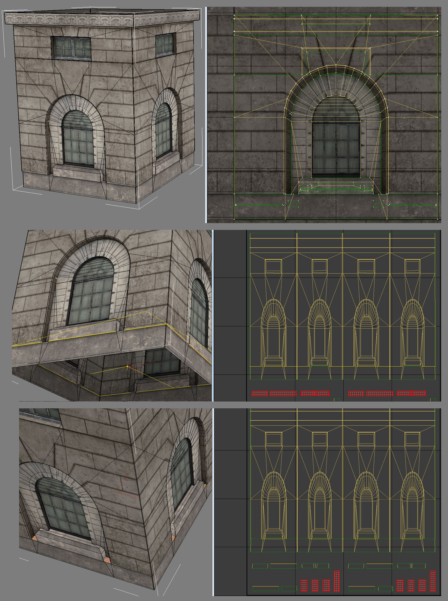
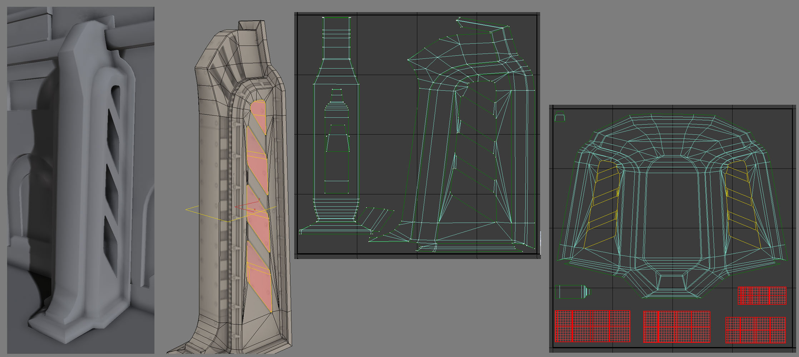
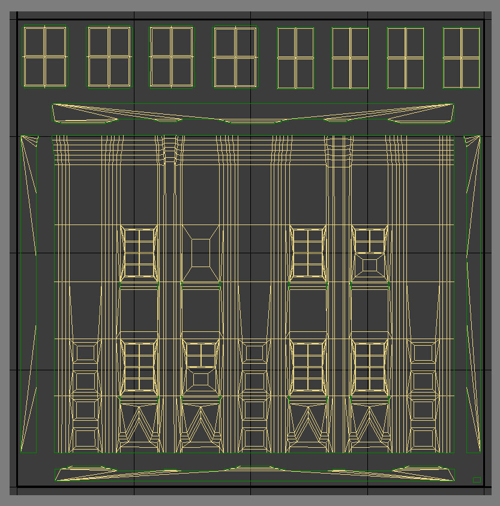
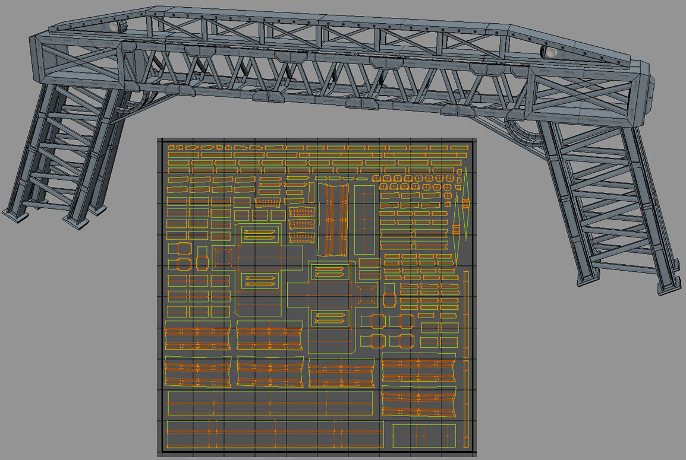
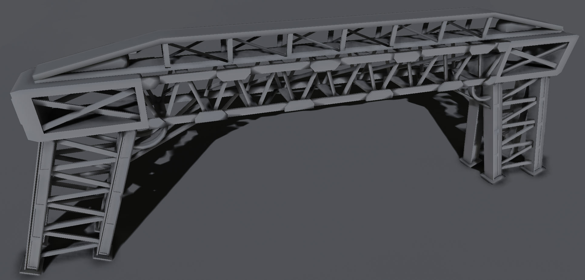
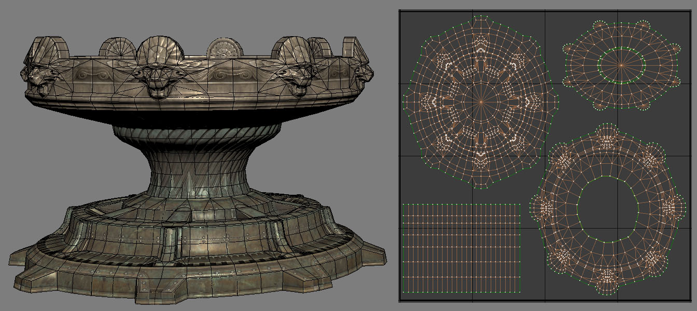
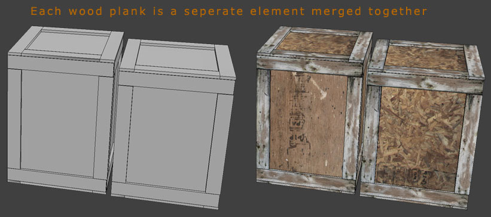
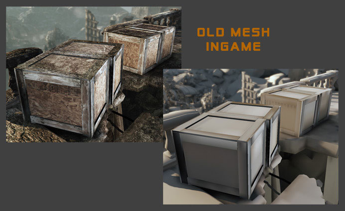
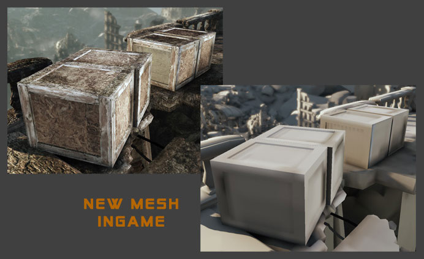
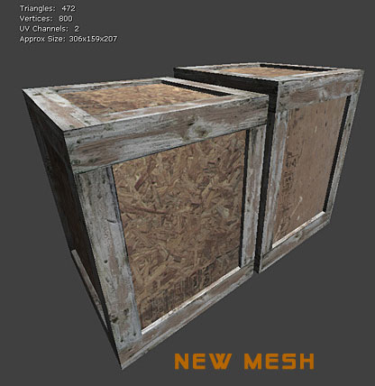

UDN
Search public documentation:
LightMapUnwrappingCH
English Translation
日本語訳
한국어
Interested in the Unreal Engine?
Visit the Unreal Technology site.
Looking for jobs and company info?
Check out the Epic games site.
Questions about support via UDN?
Contact the UDN Staff
日本語訳
한국어
Interested in the Unreal Engine?
Visit the Unreal Technology site.
Looking for jobs and company info?
Check out the Epic games site.
Questions about support via UDN?
Contact the UDN Staff
展开光照贴图的 UV
有关创建光照贴图
- BOX UNWRAP（长方形展开）
- PLANAR UNWRAP（平面展开）
- CYLINDRICAL UNWRAP（圆柱形展开）
示例

这是一个紧凑的网格物体，所以它比较适于长方形展开，只要从水平方向展开，尽可能多地使用光照贴图分辨率。将中间那张图片中突出显示的底面从整个模型中分离出来，因为它们几乎始终会渲染为黑色，如果将它们与这个 UV 的其他部分连接在一起，那么模型中原本不应该暗的地方都会因为它们的渗开而变暗。 这对于在最下面图片中显示的分离出来的顶面也同样适用，它们一直都是亮的。最上面的图片显示的是这个贴图 UV。 这种尽量在安全情况多连接的方法使我们得到了近乎完美的游戏中光照贴图，分辨率为 32x32。这里根本没有缝隙，所以在本不该暗的地方没有难于察觉的暗线。
这种尽量在安全情况多连接的方法使我们得到了近乎完美的游戏中光照贴图，分辨率为 32x32。这里根本没有缝隙，所以在本不该暗的地方没有难于察觉的暗线。

有时候您需要用力将这些部分强制弄在一起。使表面看上去整洁同时不会对光照贴图产生影响是值得的。按照 1 比 1 比率拉伸对于光照贴图所产生影响实际上并没有覆盖率所产生的影响大，所以除 1 比 1 等级外太小的区域由于渗透问题都不能进行正确的光照，但是 1 比 1 等级是覆盖率的两倍看起来效果不错。在这里您还会看到我分离了非建设性破口的内部，因为它们通常都是暗的，而我们需要避免从这些破口中渗开到外部去。 像这样的大型建筑物正面部分，使用 Planar（平面）展开效果很好。这个网格物体是紧密接邻的，这对我们要在这里进行的工作有所帮助，但是同样的屋架可以与其中包含一些垂直或水平元素的网格物体结合在一起使用。只要您放置在光照贴图 UV 上的最具代表性的内容与这个低多边形匹配，即使是需要一些间隔以防有些侧面部分在与其他部分堆放在一起时渲染为黑色也一样可以正常工作。
像这样的大型建筑物正面部分，使用 Planar（平面）展开效果很好。这个网格物体是紧密接邻的，这对我们要在这里进行的工作有所帮助，但是同样的屋架可以与其中包含一些垂直或水平元素的网格物体结合在一起使用。只要您放置在光照贴图 UV 上的最具代表性的内容与这个低多边形匹配，即使是需要一些间隔以防有些侧面部分在与其他部分堆放在一起时渲染为黑色也一样可以正常工作。

您可以在这里看到这个相接的网格物体布局允许我更加轻松地使用镜像低多边形网格物体的方法展开 UV。我还会将这些侧面，顶部 & 底部盖子从主要部分中移出来，允许出现渗透问题，我保证在它们周围留有间隔，主要部分和顶部的窗户都具有相同的间隔量。 有时候您的设计会违反这些简单的设计规则，如果设计中包含大量的带有一些单个元素的非建设性空间，那么我们需要拆分光照贴图并添加更多的间隔。 您可以看到在将栏杆固定在一起的相交垂直部分上有一些非常明显的弯曲，我们只是在这 3 块中强制地将这 2 个侧面与中间 & 中央部分弄在一起。
对于圆柱形栏杆内部，我们将其中一个面单独分离出来，同时将另一个面赋给内表面和外表面。完成上述操作后，在 3/4 这些区域中遮蔽着光滑的光照贴图，而且另一个面上光照贴图中只有一个裂缝，由于它顶上有金属光束直射，所以看不到这个裂缝。
您可以看到在将栏杆固定在一起的相交垂直部分上有一些非常明显的弯曲，我们只是在这 3 块中强制地将这 2 个侧面与中间 & 中央部分弄在一起。
对于圆柱形栏杆内部，我们将其中一个面单独分离出来，同时将另一个面赋给内表面和外表面。完成上述操作后，在 3/4 这些区域中遮蔽着光滑的光照贴图，而且另一个面上光照贴图中只有一个裂缝，由于它顶上有金属光束直射，所以看不到这个裂缝。
 有些设计可能与我们通常所进行的常规操作不同，例如下面这个设计。
有些设计可能与我们通常所进行的常规操作不同，例如下面这个设计。

当单个元素较多的时候，我们没有其他选择，只好提高贴图分辨率，否则我们将会浪费很多光照贴图空间，因为每个部分之间都有足够的间隔，这样做在游戏中看起来效果会很差。所以我计划将光照贴图分辨率提高到 128x128，不过我知道效果仍然不会完美，会有一些渗透现象，幸运的是这种现象并不严重不会破坏这个对象。
有时将模型投射为一个近似平面然后展开 UV 会很容易，因为各个部分很整洁清晰相连，这样可以轻松地将它们连接在一起，以下面这个模型为例。
这个设计肯定就是一个圆柱形的盖子加上一个平面的底座，所以我使用这 2 种基础的方法展开这个 UV。地面的那部分中心很容易就可以在 Z 轴上进行平面展开，然后应用放松修改器，微量调整选项使所有内容都不会因为倒角上的 1：1 比率问题所获得的覆盖太小。 中间部分与底座部分一样结构清晰明了，我直接强制手动使用圆柱形展开，获得了最大的覆盖率以及使用空间。通常，与低多边形网格物体的每个小平面的 1 比 1 表现形式相比，我们更加关注的是覆盖率。我在向上的 Z 轴上对顶部狮头运动部分的下部表面进行了平面展开，然后使用松弛值进行确认。 这样分离模型有一个好处就是可以将缝隙放在低多边形设计中真实的缝隙部分，所以这里的光照中有一点裂缝，感觉很自然。在有明显深度凹陷或裂缝的地方分割您的光照贴图 uv 是选择在哪里分割部分的理想经验法则，这种方法有助于表现游戏中模型并降低它的等级。
光照贴图坐标索引
LightmapCoordinateIndex 的属性，它可以使用指定的一组 UV 生成光照贴图。通过将这个属性设置为指向一组唯一的 UV，然后为光照贴图进行正确设置，静态网格物体可以享用最好的两个世界： 漫反射贴图具有较好的贴图分辨率，光照贴图产生精确的光照。
相邻 UV 以及间隔

不过这没有依赖于光照贴图并使用 Lightmass 时理想。它无法得到好的紧凑的光照贴图 UV。 而您最终将会得到一个破裂的光照贴图，其中的多边形在模型内部被渲染为黑色，渗开到网格物体的另一部分。另一个潜在缺点是像它这样也依赖于自动展开可能会引发相同的问题。
而您最终将会得到一个破裂的光照贴图，其中的多边形在模型内部被渲染为黑色，渗开到网格物体的另一部分。另一个潜在缺点是像它这样也依赖于自动展开可能会引发相同的问题。

为光照贴图创建网格物体并展开它们的 UV 的最好方法是将整个网格物体建模为一个相邻的元素并手动展开这个 UV。 这样会得到紧凑的光照贴图 UV，没有缝隙，同时提高光照贴图的利用率。
这样会得到紧凑的光照贴图 UV，没有缝隙，同时提高光照贴图的利用率。
 最终结果是一个被正确照射的网格物体，没有任何渗透失真现象。
最终结果是一个被正确照射的网格物体，没有任何渗透失真现象。

这个方法还有一个优点是它同时可以逐渐减少模型所需的三角形数量。
